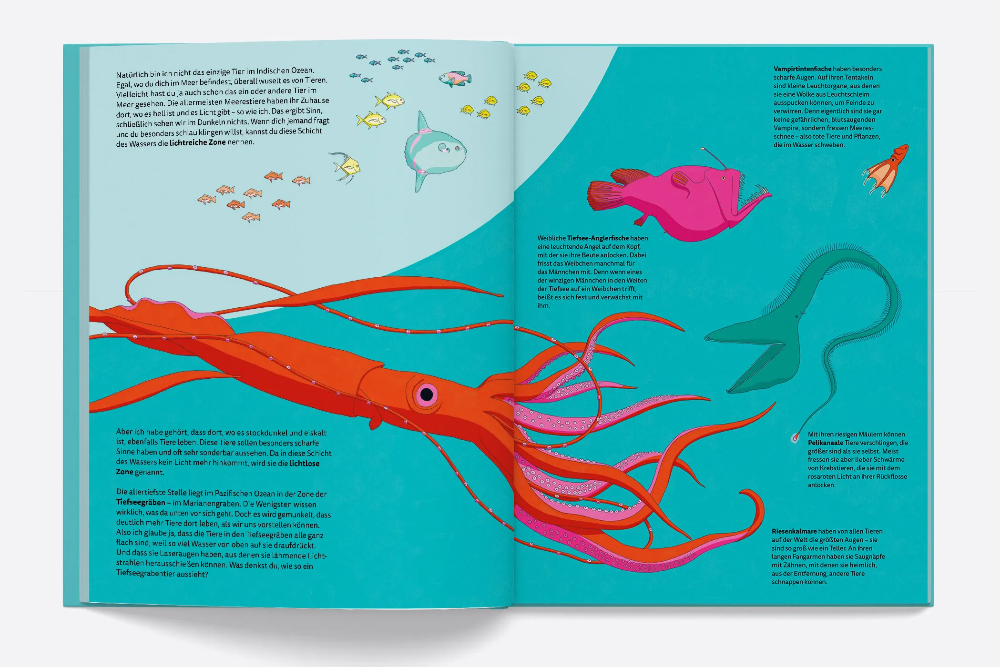
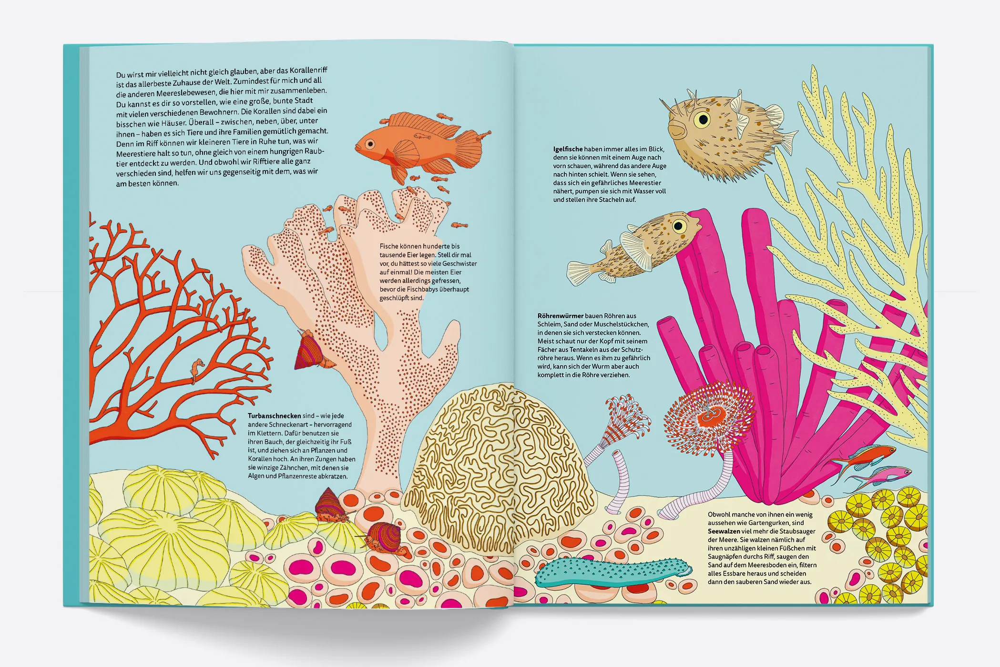
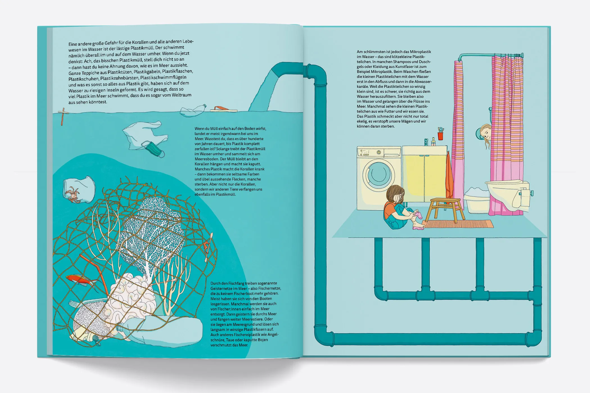
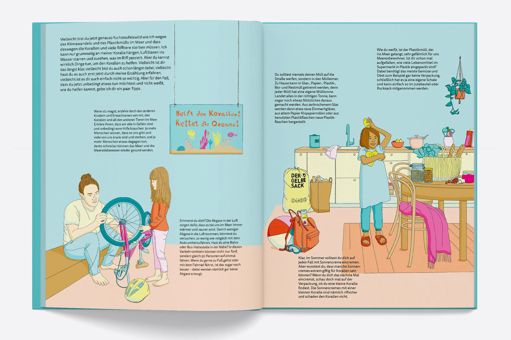

Korallen – Wer lebt im Riff?
Begleitet vom kleinsten Seepferdchen der Welt erzählt dieses illustrierte Kindersachbuch vom Leben im Meer, von der bunten Unterwasserwelt des Korallenriffs und den Gefahren des Klimawandels. Spannende Fakten wechseln sich mit amüsanten Details ab. Das Buch richtet sich an alle kleinen Entdecker*innen und soll Empathie für das Ökosystem Meer wecken und Lust machen, Unbekanntes kennenzulernen.
Illustriertes Kindersachbuch
○ Ausgezeichnet: EMYS-Sachbuchpreis, März 2024